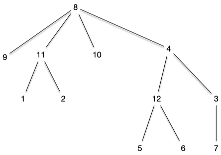

Arbres plantés
arbre planté
TBD mettre dans une section à part ? TBD calcul de hauteur récursif TBD arbres régulier.
En informatique on utilise souvent la structure d'arbre en l'enracinant, c'est-à-dire qu'on choisi un sommet qui sera la racine et tous les autres sommets vont être dépendants de lui. Ceci est possible de part une importante propriété des arbres : l'unicité des chemins.
TBD arbre et on le plante avec un BFS. étages par profondeur dans le BFS.
h = hauteur du sommet qui l'attrape + 1
L'unicité des chemins permet d'ordonner les sommets par rapport à leur chemin par rapport à la racine. On a coutume de les faire "tomber" depuis la racine. On peut en effet les ranger par rapport à leur chemin par rapport à celle ci :

Vocabulaire :
- $y$ est un ancêtre de $x$ : si $y$ est sur le chemin entre la racine et $x$
- $x$ est un descendant de $y$ : si $y$ est sur le chemin entre la racine et $x$
- $x$ est une feuille s'il n'a pas de descendant
- $x$ est un nœud intérieur s'il n'est pas une feuille
- $x$ est un enfant de $y$ : si $y$ est le sommet juste avant $x$ dans le chemin de la racine à $x$
- $y$ est un parent de $x$ : si $y$ est le sommet juste avant $x$ dans le chemin de la racine à $x$
- la hauteur de $x$ est la longueur du chemin entre la racine et $x$.
- la hauteur de l'arbre est la longueur du plus long chemin entre la racine et un autre sommet.
Donnez un exemple de chacun des termes pour le graphe ci-avant.
solution
solution
- $a$ est un ancêtre de $n$
- $g$ est un descendant de $d$
- $k$ est une feuille
- $c$ est un nœud intérieur
- $b$ est un enfant de $a$
- $h$ est un parent de $m$
- la hauteur de $i$ est 2
- la hauteur de l'arbre est 4
Cet ordonnancement est très utilisé en biologie par exemple car il permet de rendre compte de l'évolution des espèces. En analyse des données on utilise ce paradigme pour classer les données (qui sont les feuilles) selon ce qu'elles ont en commun (les leurs ancêtres).
Représentation graphique
La méthode classique pour représenter des arbres plantés est de procéder comme pour le tracé axial concentrique des arbres, mais en plaçant les différents sommets sur des droites parallèles.
En reprenant l'arbre de la partie Cayley et en le plantant en 8, on obtient la figure précédente.

Jetez aussi un coup d'œil au lien suivant qui donne plusieurs façons de dessiner des arbres plantés :